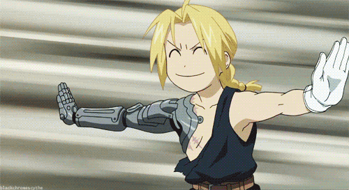
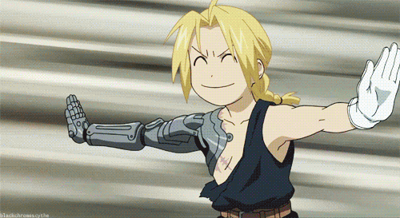
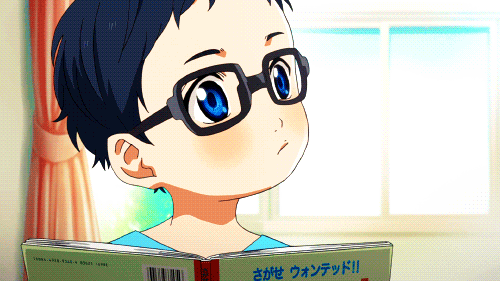
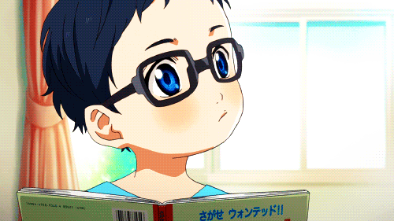

Los hermanos Edward y Alphonse intentan resucitar a su madre utilizando el poder de la alquimia. El
experimento sale mal, y como consecuencia, Edward pierde un brazo y una pierna y Alphonse todo el cuerpo.
Juntos, viajarán en busca del secreto de la transmutación humana para recuperar lo que perdieron aquel día.
Aunque después de la trama principal del manga, Fullmetal Alchemist: Brotherhood tiene algunas diferencias
claras de la obra original, como la mayoría del contenido omitido en los primeros episodios, la cual se
elimina presumiblemente debido a su inclusión en el anime de 2003
 

Shigatsu wa Kimi no Uso (四月は君の嘘 lit. Tu mentira en abril), también conocida como Your Lie in April a nivel internacional y como KimiUso (君嘘?) de forma abreviada, es una serie de manga de comedia dramática escrita e ilustrada por Naoshi Arakawa. La serie se publicó por entregas en la revista mensual Gekkan Shōnen Magazine de Kōdansha desde el 6 de abril de 2011 hasta el 6 de febrero de 2015. La historia sigue a un joven pianista llamado Kosei Arima, que pierde la capacidad de escuchar el piano después de la muerte de su madre. Una adaptación de la serie a anime producido por A-1 Pictures se emitió desde el 9 de octubre de 2014 hasta el 19 de marzo de 2015 en el bloque de programación noitaminA de Fuji TV.

Ōsama Ranking también conocida como Ranking of Kings, es una serie de manga escrita e ilustrada por Sōsuke
Tōka.
La historia se sitúa en un mundo en el que habitan ogros y gigantes, donde Bojji, un príncipe sordo quiere
comenzar una gran aventura y volverse un rey, pero nadie le tiene esperanzas. Un día, conoce a una sombra
llamada Kage quien le roba toda su ropa, pero más tarde se vuelven mejores amigos y emprenden su esperada
aventura.